Real-time DFMPro は、フィーチャーの作成／修正時に、迅速かつ即時のフィードバックおよび推奨事項を提供します。
Real-time DFMPro のオプションは、DFMPro メニューから利用できます。
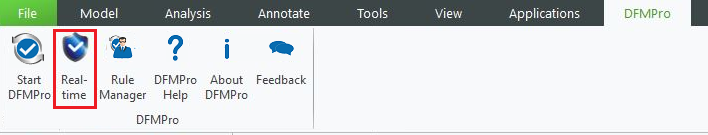
Creo Parametric を起動します。
単一のソリッドボディを含むパーツドキュメントを開くか、新規にパーツを作成します。
以下のいずれかの方法で Real-time DFMPro を開始できます：
適切なプロセスを選択します：積層造形（Additive Manufacturing）、プリズマティックミル（Prismatic Mill）、板金（Sheet Metal）、または 射出成形（Injection Molding）。
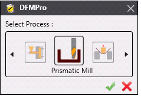
Select ボタンをクリックします。
プロセスを選択すると、ユーザーがフィーチャーを作成／修正した場合にのみ、Real-time DFMPro が検証を行い、推奨事項を提供します。
検証後、オレンジ色のアイコンが表示されます。オレンジ色のアイコンをクリックすると、推奨事項を確認できます。
|
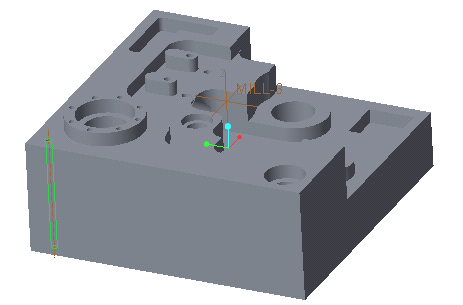 |
|
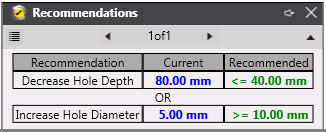
推奨事項表示
クイックヘルプを起動するには、（以下に示す）Arrow アイコンをクリックします。
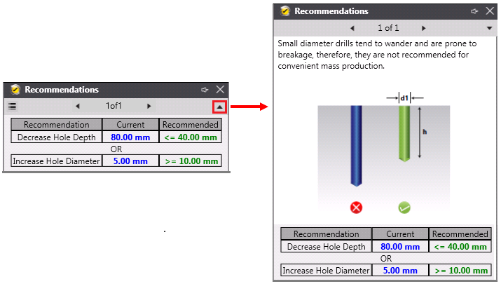
クイックヘルプ表示
複数の推奨事項がある場合は、ナビゲーションキーを使用してすべての推奨事項を表示します。
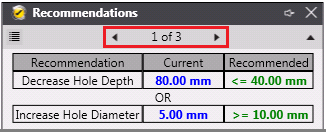
推奨事項をリスト形式で表示するには、左側のボタンをクリックします（以下参照）。
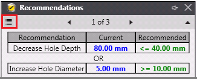
設計変更中に一部の DFMPro 推奨事項を無視またはスキップした場合、それらは Ignore リストに保存されます。スキップまたは無視された DFMPro 推奨事項を確認するには、
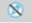
Ignored Instances ボタンをクリックします。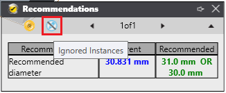
注：
DFMPro は、現在の Creo Parametric セッションに対して Ignore リストを記憶します。
緑色のアイコンをクリックすると、DFMPro ルールが合格したことを示すメッセージが表示されます。
|
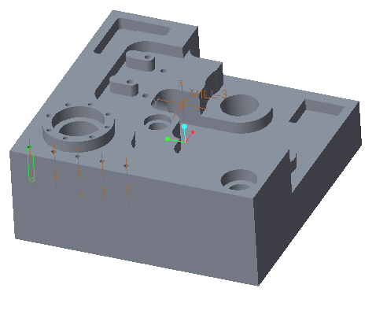 |
|
DFMPro Rules リンクをクリックすると、合格したルール名の一覧を表示できます。
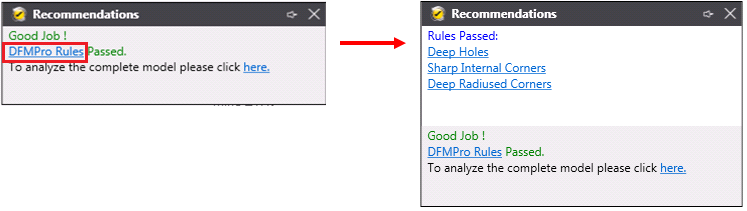
ルール名をクリックすると、クイックヘルプが起動します。
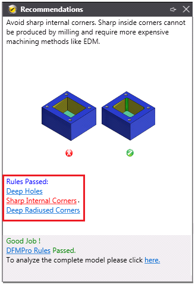
モデル全体を解析するには、here リンクをクリックして、デフォルトの DFMPro ユーザーインターフェースを起動します。
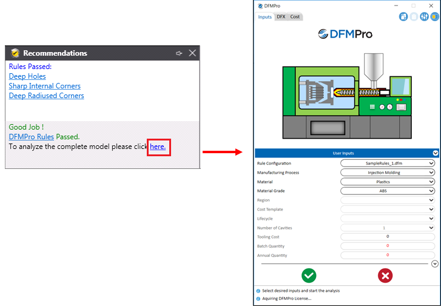
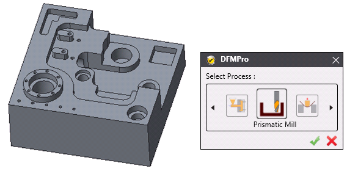
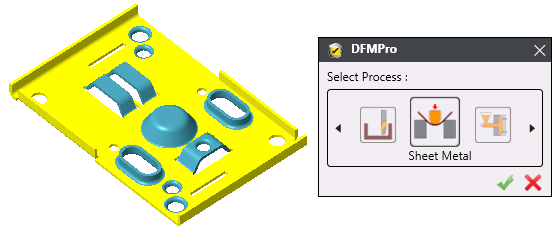
注：
Real-time DFMPro は、ネイティブの板金パーツで動作します。非ネイティブの板金パーツをサポートするには、板金パーツに変換してください。
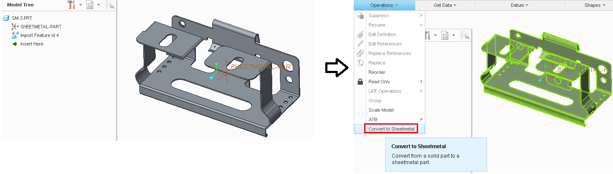
射出成形プロセスを選択した後、 Select ボタンをクリックして、主引き抜き方向を定義します。
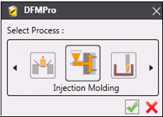
Real-time DFMPro はデフォルトの方向を提供しますが、ユーザーは
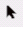
Select Direction ボタンをクリックし、平面上の方向フェースを選択することで引き抜き方向を変更できます。必要に応じて、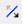
Flip Direction ボタンをクリックして方向を反転できます。Real-time DFMPro では、新しいフィーチャーを追加する場合と既存フィーチャーを修正する場合とで、公称肉厚の計算方法が異なります。
公称肉厚を更新または再計算するには、
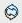
Recalculate wall Thickness ボタンをクリックします。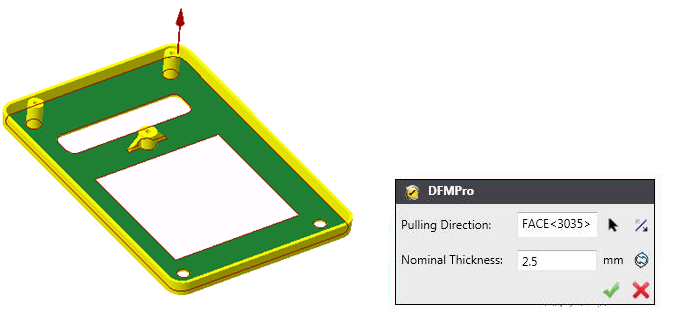
積層造形プロセスを選択した後、 Select ボタンをクリックして、造形方向を定義します。
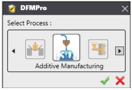
Real-time DFMPro はデフォルトの造形方向を提供しますが、ユーザーは Select Direction ボタンをクリックし、平面上の方向フェースを選択することで造形方向を変更できます。必要に応じて、 Flip Direction ボタンをクリックして方向を反転できます。
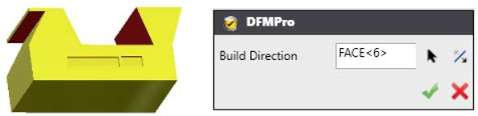
必要に応じて、以下の手順に従って、Real-time 解析プロセスを途中でキャンセルできます：
DFMPro メニューから Real-time を起動します。
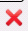
Cancel ボタンをクリックします。
注：
いずれの操作（ 選択、または キャンセル）も、現在の Creo パーツのセッションにのみ適用されます。
デフォルトでは、ルールファイルで有効化されているサポート対象ルールが検証に使用されます。サポート対象ルールが選択されていない場合、Real-time DFMPro はデフォルトのルール構成値に基づいて推奨事項を提供します。
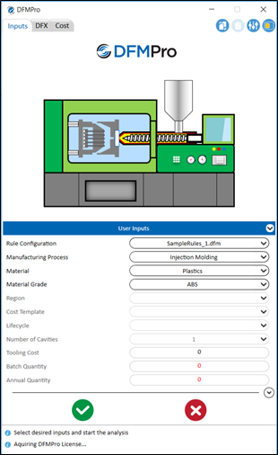
解析の重要度に応じて、以下の 3 種類のカラーコードが表示されます。
カラーコード |
アイコン |
説明 |
|
緑 |
|
すべての DFMPro チェックに合格しています。 |
|
黄 |
|
実際の値が推奨値の 75％ を超えています。 |
|
赤 |
|
実際の値が推奨値の 75％ 未満です。このようなインスタンスは重大な違反として扱われます。 |